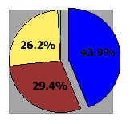

|
| ||
|
| ||
Robert Hess
Developer Relations Group
Microsoft Corporation
February 23, 1998
The following article was originally published in the Site Builder Magazine (now known as MSDN Online Voices) "More or Hess" column.
Before we dive into this month's topic, here is a little humor:
A mathematician, a physicist, and an engineer are brought into a large room and told to stand against one wall. On the floor of the room is a very precisely drawn grid; on the opposite side of the room are three sacks.The three learn that each sack contains $1 million, and that the object is for each of them to cross the room and grab a sack. The only rule is that they must cross the room in half moves only. This means that first they can walk exactly half the distance from where they stand to the sack. Then, they can again walk half the distance from where they stand to the sack, and so on.
The mathematician stands still for a moment, then shakes his head.
"Distance = 0 will never be true."And with a sigh of defeat, he turns, and walks out of the room.The physicist stares off into the distance, and he, too, shakes his head.
"Time to traverse distance equals infinity."And with that, he sighs in defeat, turns, and walks out of the room, joining the mathematician outside. Soon, they are joined by the engineer, who walks out of the room grinning, and holding all three bags."Sometimes, close enough is good enough."
What has this to do with Web-site development?
In a previous column, I talked about compatibility issues, and how to design sites that can be viewed from multiple browsers. But designing sites for multiple browsers is only one side of the "compatibility" coin. The other is knowing when it is safe to start using some new feature or capability that wasn't available on previous browsers.
Let's look at some hypothetical numbers to understand the issues:
Sample Browser Usage Statistics:
|
 |
|
At first glance, this set of numbers appears to show that because "version 4" of the browser is so much better adopted then any of its predecessors, it should be relatively safe to start using features that can be accessed from only that version of the browser. But what if you compare the "current" browser version against "all previous" browsers. This shows that 56.1 percent of users won't see the nifty feature you are implementing. Does this mean you shouldn't use any feature unavailable before version 4? What if you take the position that only version 3 features are safe? You'd still be leaving 26.7 percent of your users in the dust. Is that an acceptable casualty rate?
Fortunately, in most cases the situation is not as severe as it might sound at first. As with the lucky engineer in our joke, sometimes "close enough" is all it takes.
Most browsers in use today fully support the <TABLE> tag. A lot of Web sites use it to achieve better control of page layout. However, it wasn't so long ago that many browsers didn't support the <TABLE> tag. Only after a lot of soul-searching and debate over the "safety" issues of using this new tag did Web designers finally take the plunge and use it on their sites. Many those designers didn't fully realize that, when properly utilized, even as radical a page element as a table could be used in a way that is safe for downlevel browsers to view.
That was back in the days of Internet Explorer 1.0. Once when browsing the Web, I ran into a site that had an icon on it indicating I needed Netscape Navigator to view it. I wandered through the site, reading the pages, following the links. Not only did I have no trouble, I thought the site looked pretty cool as well. I couldn't figure out why it said I needed Navigator, so I sent e-mail to the site's author. He responded that the site was using the then-new <TABLE> element to organize pages. So I went down the hall, found somebody running Navigator, and took a look at the site. Sure enough, the site's layout looked a lot different when the tables kicked in; but the important thing was that the site still looked fine without them.
Even today, there are certain tags that Navigator knows how to render, but Internet Explorer doesn't. And vice-versa. Are these tags "safe" to use? It all depends on how you use them, and why. Let's take a simple tag, such as <BLINK>. It's been part of Navigator for quite a while now, but I doubt it will ever be supported in Internet Explorer. This doesn't mean it's not safe to use.
Aside from aesthetics, there isn't anything wrong with using the following
<blink>New!</blink>
on your pages, as long as it is acceptable to you that the text won't actually blink on all browsers. On the other hand, if you reference this blinking behavior anywhere in the content on the page, your use of this tag has quickly become unsafe.
Many of the newer features have been added to browsersin such a way that layering their functionality is possible. This means the author can supply information that will be displayed by downlevel clients. <FRAMESET>, <IFRAME>, <OBJECT>, and <EMBED> are all examples of elements that realize they may not be supported on all browsers, and allow the author a way to supply alternate information. Other elements, such as <BLINK>, <MARQUEE>, <BGSOUND>, and <FONT>, don't support any alternate view -- but if they are properly used, the user will never know anything is missing
As you consider the adoption rate of newer browsers, it is important to know that some people using older browsers aren't doing so just because they haven't gotten around to updating, but because they are not going to update. There are various reasons for this. Sometimes there are corporate-support issues, sometimes there are limitations of hardware and operating systems, sometimes it is simply the "if-it-ain't-broke, don't-fix-it" approach. You need to understand these issues as they apply to your potential customer base, and what they might mean to the exposure of the information you are presenting.
In the end, the choice of which advanced elements to use -- and when -- is yours (or your client's). If you feel confident that you can layer the usage so that downlevel browsers still have full access to all information, then the decision is pretty simple.
However, if an advanced element allows you to provide something on your site that is essentially impossible to achieve in older browsers, you have to consider carefully whom you are leaving behind.
The entire process takes the form of a complex dance. The browser offers up its ability to render information, you offer up your ability to creatively mold your information. If the two of you can work well together, your audience will be treated to a beautiful presentation. And if you choose your theater size properly, everybody can get in.
Robert Hess is an evangelist in Microsoft's Developer Relations Group. Fortunately for all of us, his opinions are his own and do not necessarily reflect the positions of Microsoft.
Nancy Cluts has another take on the ups and downs of implementing new technologies in a MSDN Online Voices feature article, When is Better Worse? Weighing the Technology Trade-Offs.
For technical how-to questions, check in with the Web Men Talking, MSDN Online's answer pair.
Did you find this material useful? Gripes? Compliments? Suggestions for other articles? Write us!
© 1999 Microsoft Corporation. All rights reserved. Terms of use.